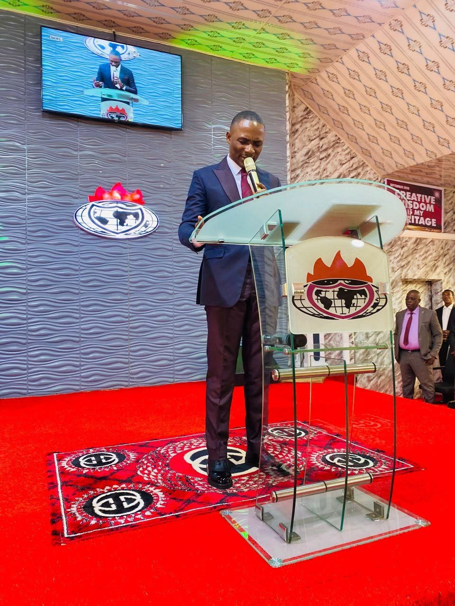

Winners Chapel · Issele-Uku
Faith for today.
Hope for tomorrow.
There is a place for you here. Come worship, find community, and discover the life God has for you.
A place to belong
01 / WELCOME
A home for your
faith to flourish.
Winners Chapel is a Christ-centred community in Issele-Uku, growing together in faith, serving our neighbours, and making room for everyone to encounter God's love.
Discover our churchCome as you are.
There’s room for you.
SUNDAYS AT WINNERS CHAPELLet’s worship
Let’s worship
together.
Growing together in faith
02 / OUR PASTOR
“You belong
“You belong
in this family.”
A personal welcome from our pastor
Pastor Judah and the Winners Chapel family would love to welcome you. Whether you are new to church or finding your way back, there is a seat for you and a community ready to walk alongside you.
Pastor Judah
Come meet us03 / LIFE TOGETHERFaith grows
Faith grows
in community.
There’s more to church than Sunday. Find a place to connect, grow, and be part of what God is doing in Issele-Uku.
YOU DON’T HAVE TO CARRY IT ALONE
Can we pray
Can we pray
with you?
Whatever you’re walking through, you are welcome to share it with us. Our church family would be honoured to pray with you.
Get in touchWE’LL SAVE YOU A SEAT
See you Sunday.
Winners Chapel
Issele-Uku, Delta State